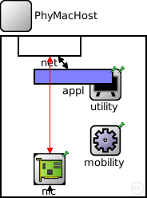
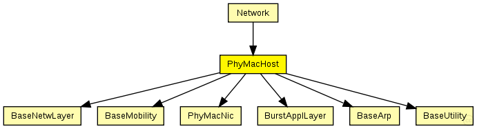
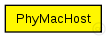

This documentation is released under the Creative Commons license
This documentation is released under the Creative Commons license(no description)
The following diagram shows usage relationships between types. Unresolved types are missing from the diagram. Click here to see the full picture.
The following diagram shows inheritance relationships for this type. Unresolved types are missing from the diagram. Click here to see the full picture.
If a module type shows up more than once, that means it has been defined in more than one NED file.
| Network (compound module) | (no description) |
| Name | Type | Default value | Description |
|---|---|---|---|
| numHosts | double |
total number of hosts in the network |
| Name | Value | Description |
|---|---|---|
| display | bgb=180,200,white,,;bgp=10,10 |
| Name | Direction | Size | Description |
|---|---|---|---|
| radioIn | input |
| Name | Type | Default value | Description |
|---|---|---|---|
| utility.coreDebug | bool |
debug switch for the base framework |
|
| mobility.coreDebug | bool |
debug switch for the core framework |
|
| mobility.x | double |
x coordinate of the nodes' position (-1 = random) |
|
| mobility.y | double |
y coordinate of the nodes' position (-1 = random) |
|
| mobility.z | double |
z coordinate of the nodes' position (-1 = random) |
|
| arp.coreDebug | bool |
debug switch for the core framework |
|
| appl.debug | bool |
debug switch |
|
| appl.headerLength | int |
length of the application message header (in bits) |
|
| appl.burstSize | int |
size of the burst |
|
| net.notAffectedByHostState | bool | false | |
| net.debug | bool |
debug switch |
|
| net.stats | bool |
stats switch |
|
| net.headerLength | double |
length of the network packet header (in bits) |
|
| nic.phy.coreDebug | bool | ||
| nic.phy.headerLength | int | 0 |
defines the length of the phy header (/preamble) |
| nic.phy.usePropagationDelay | bool |
Should transmission delay be simulated? |
|
| nic.phy.thermalNoise | double |
the strength of the thermal noise [dBm] |
|
| nic.phy.useThermalNoise | bool |
should thermal noise be considered? |
|
| nic.phy.analogueModels | xml |
Specification of the analogue models to use and their parameters |
|
| nic.phy.decider | xml |
Specification of the decider to use and its parameters |
|
| nic.phy.sensitivity | double |
The sensitivity of the physical layer [dBm] |
|
| nic.phy.maxTXPower | double |
The maximum transimission power of the physical layer [mW] |
|
| nic.phy.timeRXToTX | double |
switchTimes [s]: |
|
| nic.phy.timeRXToSleep | double | ||
| nic.phy.timeTXToRX | double | ||
| nic.phy.timeTXToSleep | double | ||
| nic.phy.timeSleepToRX | double | ||
| nic.phy.timeSleepToTX | double | ||
| nic.phy.initialRadioState | int | ||
| nic.mac.notAffectedByHostState | bool | false | |
| nic.mac.coreDebug | bool |
debug switch |
|
| nic.mac.headerLength | double |
length of the MAC packet header (in bits) |
|
| nic.mac.slotDuration | double |
how long is a slot? [s] |
|
| nic.mac.difs | double |
maximum time between a packet and its ack [s] |
|
| nic.mac.maxTxAttempts | double |
maximum number of transmission attempts |
|
| nic.mac.queueLength | int |
length of the MAC queue |
|
| nic.mac.defaultChannel | double |
default channel |
|
| nic.mac.bitrate | double |
bit rate [bps] |
|
| nic.mac.txPower | double |
tx power [mW] |
|
| nic.mac.contentionWindow | double |
contention window |
module PhyMacHost { parameters: double numHosts; // total number of hosts in the network @display("bgb=180,200,white,,;bgp=10,10"); gates: input radioIn; submodules: utility: BaseUtility { parameters: @display("p=130,60;i=block/blackboard"); } mobility: BaseMobility { parameters: @display("p=130,130;i=block/cogwheel"); } arp: BaseArp { @display("p=200,225;b=30,25"); } appl: BurstApplLayer { @display("p=90,50;b=100,20,rect"); } net: BaseNetwLayer { parameters: @display("p=60,10;b=80,30,rect,white,,"); } nic: PhyMacNic { parameters: @display("b=32,30;p=60,166;i=block/ifcard"); } connections: nic.upperGateOut --> { @display("ls=black;m=m,25,50,25,0"); } --> net.lowerGateIn; nic.upperGateIn <-- { @display("ls=black;m=m,15,50,15,0"); } <-- net.lowerGateOut; nic.upperControlOut --> { @display("ls=red;m=m,75,50,75,0"); } --> net.lowerControlIn; nic.upperControlIn <-- { @display("ls=red;m=m,85,0,85,0"); } <-- net.lowerControlOut; net.upperGateOut --> appl.lowerGateIn; net.upperGateIn <-- appl.lowerGateOut; net.upperControlOut --> appl.lowerControlIn; net.upperControlIn <-- appl.lowerControlOut; radioIn --> nic.radioIn; }
This documentation is released under the Creative Commons license